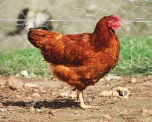

|  | Ce sont des animaux sociables, faciles à vivre et qui ont besoin de peu pour être heureux. Les poules n'aiment pas la solitude, raison pour laquelle elles doivent être au moins deux pour se tenir compagnie. Selon leur race, elles peuvent pondre 150 à 300 œufs par an ! | 10€ |